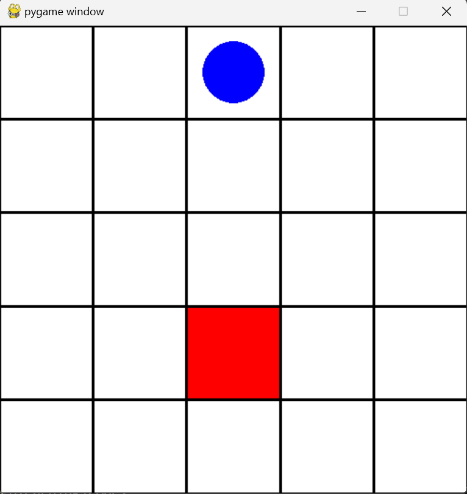

这个小实践以一个示例说明构建 Env 的基本方法。同样能够涉及到 Gymnasium 的基本用法。
# 环境准备
最好新建一个虚拟环境，在这个环境下进行环境配置。
首先，需要在终端执行如下命令安装这个示例需要的包：
pip install copier | |
copier copy https://github.com/Farama-Foundation/gymnasium-env-template.git "path/to/directory" |
其中，"path/to/directory" 更改为你自定义的放项目的文件夹位置。执行完毕后，项目文件夹下会出现如下内容：
. | |
├── gymnasium_env | |
│ ├── envs | |
│ │ ├── grid_world.py | |
│ │ └── __init__.py | |
│ ├── __init__.py | |
│ └── wrappers | |
│ ├── clip_reward.py | |
│ ├── discrete_actions.py | |
│ ├── __init__.py | |
│ ├── reacher_weighted_reward.py | |
│ └── relative_position.py | |
├── LICENSE | |
├── pyproject.toml | |
└── README.md |
然后确保你的电脑安装了 Microsoft Visual C++ Build Tools。
安装方法：
- 在浏览器打开 https://visualstudio.microsoft.com/zh-hans/visual-cpp-build-tools/
- 点击 “下载生成工具”，接着会下载 vs_BuildTools.exe。
- 下载完毕后执行 vs_BuildTools.exe，在工作负载勾选第一个。
- 在右侧勾选以下组件：MSVC v143 - VS 2022 C++ x64/x86 build tools、Windows 11 SDK。
- 点击安装即可。
最后，在终端执行：
cd "path/to/directory" | |
pip install swig | |
pip install "gymnasium[box2d]" | |
cd gymnasium_env | |
pip install -e . |
自此相关环境已经配置完毕。
# 创建环境实例
在与 gymnasim_env 同级下，编写 run.py 文件：
import gymnasium | |
import gymnasium_env | |
env = gymnasium.make('gymnasium_env/GridWorld-v0', render_mode='human') | |
env.reset() | |
episode_over = False | |
while not episode_over: | |
action = env.action_space.sample() | |
observation, reward, terminated, truncated, info = env.step(action) | |
episode_over = terminated or truncated | |
env.close() |
点击运行，就可以看到一个网格，Agent 是蓝色的圆圈，Agent 想要到达红色方块处，这就是 Agent 运行的环境 Env。这个 Agent 因为是一个未训练的模型，所以并不能高效地完成这个任务，它经过了一段时间才 “随机” 地到达了红色方块处。本实践主要是展示如何构建一个环境实例。

# 相关说明
下面说明一些重要的方法以帮助进一步理解环境创建的过程。
env = gymnasium.make('gymnasium_env/GridWorld-v0', render_mode='human') |
这个语句，根据 'gymnasium_env/GridWorld-v0' 路径下自定义的环境类创建一个环境，render_mode 是可视化的模式，‘human’表示用人性化的方式展现出来。
很明显，你发现并没有这个路径 'gymnasium_env/GridWorld-v0'，我们打开 gymnasium_env 文件夹下的__init__.py，可以看到如下代码：
from gymnasium.envs.registration import register | |
register( | |
id="gymnasium_env/GridWorld-v0", | |
entry_point="gymnasium_env.envs:GridWorldEnv", | |
) |
因为是自定义的环境类，而非 gymnasium 库内置的环境类，所以通常需要用 register 类进行环境注册。entry_point 指定了类的位置，id 根据其创建一个路径。但如此做还不够，因为 gymnasium 不一定能够通过 "gymnasium_env.envs:GridWorldEnv" 找到自定义的 GridWorldEnv。
因为这条语句的意思是，向 gymnasium_env.envs 文件夹寻找 GridWorldEnv 这个类，但 envs 文件夹自己能不能知道自己有 GridWorldEnv 这个类？我们还要再做一步，在 envs 文件夹内的__init__.py 文件导入 GridWorldEnv，正如代码所示的那样：
from gymnasium_env.envs.grid_world import GridWorldEnv |
这样，"gymnasium_env.envs:GridWorldEnv" 就能生效了，GridWorldEnv 便可以被注册为 "gymnasium_env/GridWorld-v0" 这个路径。
env.reset() |
环境类通常有内置方法 reset ()，这个方法用于初始化环境。当环境类被实例化后，使用该方法生成第一个观察状态。
action = env.action_space.sample() |
当前实践的 Agent 的代码没有定义，所以暂时用环境类内置的 action_space 方法去生成 Agent 的动作。一般情况下，Agent 的 action 是 Agent 观察环境后得出的，是 Agent 的方法。
observation, reward, terminated, truncated, info = env.step(action) |
环境类需要有 step 方法，根据 Agent 的 action 去生成激励 reward，更新旧观察状态为新观察状态 observation。terminated 是检查是否已经结束游戏，truncated 检查是否应该中途停止游戏，info 是游戏有关的信息。
env.close() |
没什么说的，关闭环境，释放资源。